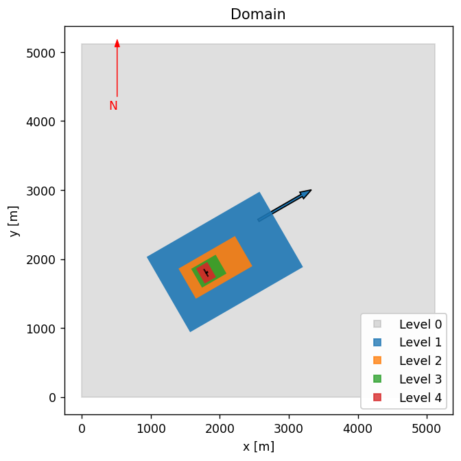

Setting up the single turbine NREL5MW case in AMR-Wind
Contents
Prerequisites
Download the benchmarks repository
$ git clone --recursive git@github.com:Exawind/exawind-benchmarks.git BENCHMARKDIR
Here the optional argument
BENCHMARKDIRis the location where you’d like the benchmark repository to be cloned. If it is not provided, then the repo will be cloned intoexawind-benchmarksin the current directory.Run the slightly convective ABL benchmark case.
The NREL5MW case depends on initial conditions and boundary condition data which is generated during that ABL benchmark case, so it needs to be run before the NREL5MW case can be run.
Download the AMR-Wind front end tool.
The AMR-Wind front end tool has useful utilities which can be used for setting up the OpenFAST turbine model and postprocessing results. It is available on github and can be downloaded via
$ git clone --recursive git@github.com:Exawind/amr-wind-frontend.git AMRWINDFEDIR
where
AMRWINDFEDIRis the location you’d like the tool to be located. For the basic use of front end tool, the usual python 3 libraries (numpy, scipy, pandas, etc.) are required.
Step 1: create the run directory
Prepare a location where this case can be run. This will likely be a location on the HPC where larger jobs can be run, and where lots of data (many gigabytes) can be stored. First create the directory:
$ mkdir RUNDIR
Note that RUNDIR can be an arbitrary name or location chosen to be convenient for the user or HPC system. Then copy the necessary input files into RUNDIR
$ cp BENCHMARKDIR/amr-wind/actuator_line/NREL5MW_ALM_RIGID/input_files/NREL5MW_ALM_RIGID_OFv402.inp RUNDIR
$ cp BENCHMARKDIR/amr-wind/actuator_line/NREL5MW_ALM_RIGID/input_files/avg_theta.dat RUNDIR
$ cp BENCHMARKDIR/amr-wind/actuator_line/NREL5MW_ALM_RIGID/setup/nrel5mw_v402_rigid.yaml RUNDIR
Step 2: download the openfast model
By default, the NREL5MW files required for the single turbine simulation are not included with the benchmarking repository. However, they can be easily downloaded using some provided utilities. First navigate to the run directory:
$ cd RUNDIR
Then use the downloadOFmodel.py to download all of the required turbine files.
$ AMRWINDFEDIR/utilities/downloadOFmodel.py nrel5mw_v402_rigid.yaml
The downloadOFmodel.py will pull the necessary files straight from the OpenFAST repo, ensure files are from the right OpenFAST version, and make edits to the OpenFAST parameters so that the turbine is correctly configured for this case.
Then change the name of the directory to match what is used in the input file
$ mv NREL5MW_v402_RIGID/ T0_NREL5MW_v402_RIGID/
Step 3: edit the file locations
There are two edits required to the input file NREL5MW_ALM_RIGID_OFv402.inp in order to properly refer to the right locations. The first is the location of the restart file:
io.restart_file = /gpfs/lcheung/HFM/exawind-benchmarks/Neutral_ABL/chk30000
The second is the location of the boundary I/O files:
ABL.bndry_file = /gpfs/lcheung/HFM/exawind-benchmarks/convective_abl/bndry_file
In each of these lines, change the path to match the location where the precursor directory was run.
Step 4: submit the run
On many HPC platforms, a submission script needs to be used to launch the case. For slurm based systems, a submit script like this submit.sh file is used:
#!/bin/bash
#SBATCH --nodes=8
#SBATCH --time=47:59:59 # Wall clock time (HH:MM:SS) - once the job exceeds this time, the job will be terminated (default is 5 minutes)
#SBATCH --job-name=NREL5MW # Name of job
#SBATCH --partition=batch # partition/queue name: short or batch
#SBATCH --qos=normal # Quality of Service: long, large, priority or normal
export nodes=$SLURM_JOB_NUM_NODES
# Load any required modules here
#module purge
#module load ...
export EXE=/projects/wind_uq/lcheung/AMRWindBuilds/hfm.20250211/amr-wind/build/amr_wind
# Number MPI processes to run on each node (a.k.a. PPN)
export cores=112
export ncpus=$((nodes * cores))
export OMP_PROC_BIND=spread
export OMP_PLACES=threads
time mpiexec --bind-to core --npernode $cores --n $ncpus $EXE NREL5MW_ALM_RIGID_OFv402.inp
Then, for slurm based queueing systems, submit the run with a command like:
$ sbatch submit.sh
Turbine and mesh settings
In this section we provide some explanations and context for the turbine and mesh parameter settings used in the simulation.
Mesh and domain

The domain that is used in the NREL5MW case is the same as in the precursor ABL, namely one that has dimensions of 5120m x 5120m x 1920m. The turbine base location is at (x,y) = (1800, 1800). The background (level 0) grid uses a 10m resolution which is refined twice to reach 2.5m resolution at the rotor, for a total mesh size of approximately 70.5M. Note that for the blade-resolved version of this run, two additional refinement zones are used, so the resolution at the rotor disk is 0.625m.
Level |
grid size |
|---|---|
0 |
10 m |
1 |
5 m |
2 |
2.5 m |
OpenFAST settings
The following changes need to be made to the default NREL5MW model. These changes are automatically made nrel5mw_v402_rigid.yaml
OpenFAST FST file
Parameter |
Value |
Comment |
|---|---|---|
DT |
0.0008608815426997245 |
Typically DT=0.005, but a smaller value is used for beamdyn |
DT_Out |
0.0215220385675 |
Output OpenFAST data at 25 times |
CompElast |
1 |
|
CompInflow |
2 |
Inflow is defined from external source (AMR-Wind) |
CompServo |
0 |
Do not use a turbine controller in the simulation |
OutFileFmt |
3 |
|
AirDens |
1.00 |
A density of 1.00 kg/m^3 was used in the precursor |
ElastoDyn file
Parameter |
Value |
Comment |
|---|---|---|
NacYaw |
30.0 |
This will align the turbine with the flow from 240 degrees (South-West) |
YawDOF |
False |
Fix the turbine yaw position in time |
GenDOF |
False |
Turn off generator degree of freedom |
FlapDOF1 |
False |
Turn off flap mode degree of freedom |
FlapDOF2 |
False |
Turn off flap mode degree of freedom |
EdgeDOF |
False |
Turn off edge mode degree of freedom |
DrTrDOF |
False |
Turn off drive train rotational/flexibility degree of freedom |
TwFADOF1 |
False |
Turn off tower mode degree of freedom |
TwFADOF2 |
False |
Turn off tower mode degree of freedom |
TwSSDOF1 |
False |
Turn off tower mode degree of freedom |
TwSSDOF2 |
False |
Turn off tower mode degree of freedom |
RotSpeed |
12.1 |
Fix rotor speed to 12.1 rpm |
BlPitch(1) |
0.0 |
Fix blade pitch to 0 degrees |
BlPitch(2) |
0.0 |
Fix blade pitch to 0 degrees |
BlPitch(3) |
0.0 |
Fix blade pitch to 0 degrees |
AeroDyn file
Parameter |
Value |
Comment |
|---|---|---|
Wake_Mod |
0 |
Required when coupling OpenFAST with AMR-Wind |
Some of these changes are necessary when coupling OpenFAST with AMR-Wind, and many of these parameters are chosen to maintain consistency with the blade-resolved version of the NREL5MW run.
Several of the settings related to blade-element momentum theory and unsteady aerodynamics model remain unchanged from the OpenFAST defaults. For instance, the tip-loss and hub-loss models are not used in this simulation:
--- BEM algorithm
True TipLoss - Use the Prandtl tip-loss model? (flag) [unused when Wake_Mod=0 or 3]
True HubLoss - Use the Prandtl hub-loss model? (flag) [unused when Wake_Mod=0 or 3]
True TanInd - Include tangential induction in BEMT calculations? (flag) [unused when Wake_Mod=0 or 3]
False AIDrag - Include the drag term in the axial-induction calculation? (flag) [unused when Wake_Mod=0 or 3]
False TIDrag - Include the drag term in the tangential-induction calculation? (flag) [unused when Wake_Mod=0,3 or TanInd=FALSE]
"Default" IndToler - Convergence tolerance for BEMT nonlinear solve residual equation {or "default"} (-) [unused when Wake_Mod=0 or 3]
100 MaxIter - Maximum number of iteration steps (-) [unused when Wake_Mod=0]
and the default Beddoes-Leishman parameters are used here:
====== Unsteady Airfoil Aerodynamics Options ====================================================
False AoA34 - Sample the angle of attack (AoA) at the 3/4 chord or the AC point {default=True} [always used]
3 UA_Mod - Unsteady Aero Model Switch (switch) {0=Quasi-steady (no UA), 2=B-L Gonzalez, 3=B-L Minnema/Pierce, 4=B-L HGM 4-states, 5=B-L HGM+vortex 5 states, 6=Oye, 7=Boeing-Vertol}
True FLookup - Flag to indicate whether a lookup for f' will be calculated (TRUE) or whether best-fit exponential equations will be used (FALSE); if FALSE S1-S4 must be provided in airfoil input files (flag) [used only when UA_Mod>0]
0 UAStartRad - Starting radius for dynamic stall (fraction of rotor radius [0.0,1.0]) [used only when UA_Mod>0; if line is missing UAStartRad=0]
1 UAEndRad - Ending radius for dynamic stall (fraction of rotor radius [0.0,1.0]) [used only when UA_Mod>0; if line is missing UAEndRad=1]
ALM settings
When using the actuator line method in AMR-Wind, several additional parameters need to be set for this case. The number of actuator line points along the length of the blade and tower needs to be set, as well as the magnitude of epsilon, which sets the amount of smearing required for the applied force at each actuator force point. These settings are defined through these parameters in the AMR-Wind input file:
Actuator.T0.num_points_blade = 25
Actuator.T0.num_points_tower = 11
Actuator.T0.epsilon = 1.5 1.5 1.5
Actuator.T0.epsilon_tower = 1.5 1.5 1.5
Optional: using the jupyter notebook
If you’re interested in modifying the AMR-Wind input file, for instance, to change the refinement regions or sampling planes, you can use the Jupyter notebook SetupALM_OFv402_RIGID.ipynb. This will allow you to visualize the locations of the refinements or planes, and will generate the AMR-Wind input file NREL5MW_ALM_RIGID_OFv402.inp at the end of the process.
There are a few modifications required to execute the notebook. First, the location of the AMR-Wind front end directory (and the utilities subdirectory) should be provided in the amrwindfedirs list here:
# Add any possible locations of amr-wind-frontend here
amrwindfedirs = ['/projects/wind_uq/lcheung/amrwind-frontend',
'/projects/wind_uq/lcheung/amrwind-frontend/utilities',
]
Secondly, the location of the precursor directory and the inputfile from the precursor run should be supplied in the precursordir directory and the precursorsetup input file, respectively.
# Location of precursor run with boundary data
precursordir = '/gpfs/lcheung/HFM/exawind-benchmarks/convective_abl'
precursorsetup= precursordir+'/neutral_abl_bndry.inp'
The location of the input files and openfast files will be set in the farmrundir variable:
farmrundir = '../input_files' # Put all AMR-Wind input files here
The Jupyter notebook will take care of downloading the turbine model so Step 2 above does not need to be executed, just set downloadturbmodel=True and addturbdef = True.
Once the notebook is executed, it will generate a set of three input files defined by these variables:
outputfile = 'NREL5MW_ALM_RIGID_OFv402.inp' # Input file for AMR-Wind run with OpenFAST ALM turbine
noturboutputfile = 'NREL5MW_ALM_RIGID_noturb.inp' # Input file for AMR-Wind run with no turbine present
BRoutputfile = 'NREL5MW_BR.inp' # AMR-Wind input file for the blade-resolved run with ExaWind hybrid solver